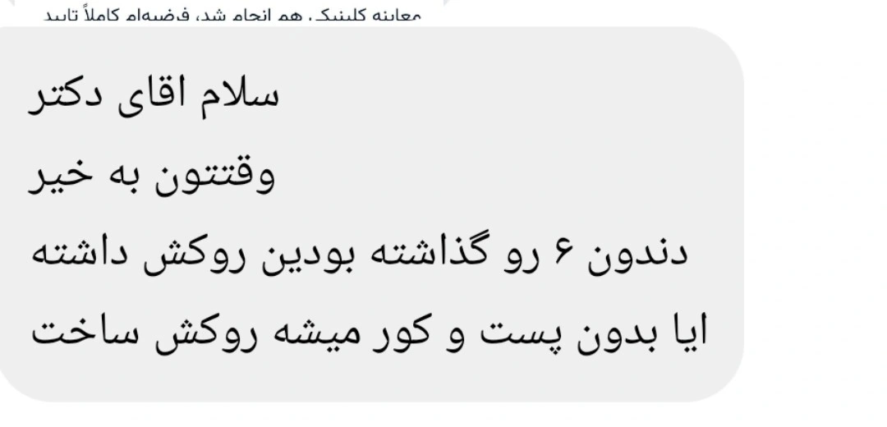

Insight 76 — Crowning an Endodontically Treated Tooth Without a Post: When Is a Post Needed and When Is It Not?

Question:
Hello Doctor, good day. For the first molar that you prepared for a crown, can a crown be made without a post and core?
Answer:
To answer this question we need to know exactly what the role of a post is. A post does not reinforce the root and does not increase the tooth's resistance to fracture. The only job of a post is to provide retention for the core. That is, when the remaining coronal structure is not enough to hold the core, we use the root canal to provide that retention.
So the right question is not “is a post needed or not”, but “does the core have enough retention without a post”. If the remaining coronal structure is sufficient, the core is built on that same structure, the crown is prepared and cemented on the core, and there is no need for a post. In these circumstances a post is not merely unnecessary, it is harmful, because preparing the post space requires removing radicular dentin and makes the root more vulnerable to fracture.
In the first molar these conditions are often met. Molars have a bulky pulp chamber, and after endodontic treatment that chamber, together with the first few millimetres of the canals, provides good retention for a core. That is why the indication for a post in molars is far less common than in anterior teeth.
In short: if enough coronal walls remain and there is an adequate ferrule, making a crown without a post is entirely feasible, and in terms of preserving tooth structure it is also the better choice. A post is indicated only when the coronal structure is not enough to provide retention for the core.
The content of this page is intended for the educational use of dentists and dental students.